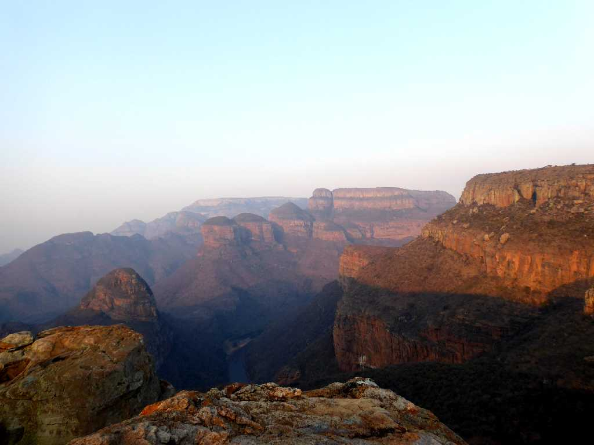
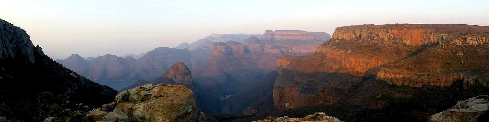
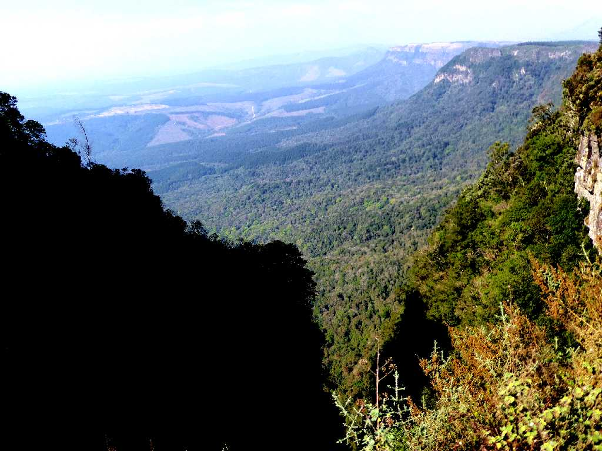
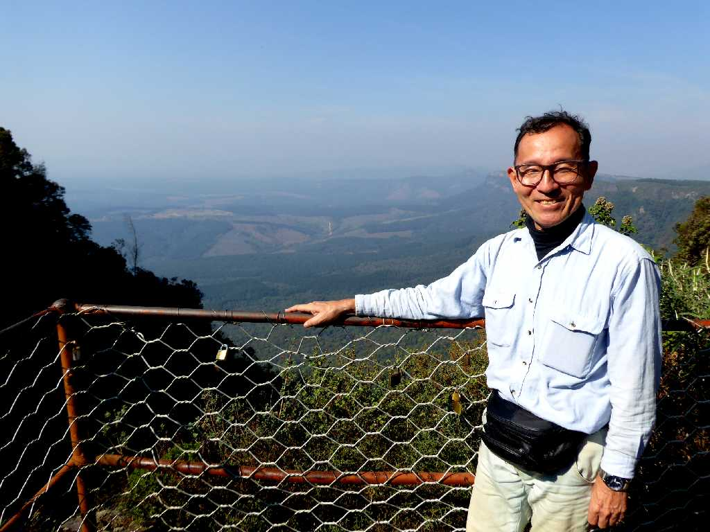

A Forever Resort Viewpoint Blyde River Canyon
ブライドリバーキャニオンは全長約１００ｋｍ深さ１,３７２ｍある世界三大渓谷の一つ

A Forever Resort Viewpoint Blyde River Canyon

God's Window Viewpoint Blyde River Canyon
ブライドリバーキャニオン別名グリーンキャニオンとも云われ緑に覆われた渓谷としては世界一の規模を誇る

September 6 2018 God's Window Viewpoint Blyde River Canyon
ブライドリバーキャニオンの神の窓と云われる眺望だが緑の渓谷で水蒸気が多く靄っていた